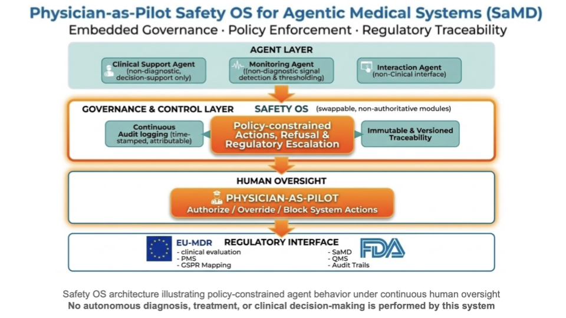

Safety OS: Clinical Governance for Safe AI Support
Empowering Independence. Preserving Dignity.
Safety OS is the regulatory-grade governance and behavioral control framework that ensures supervised AI assistance can operate safely, predictably, and ethically in real-world home care environments. It anchors every action with clear clinical boundaries, human oversight, and transparent accountability — making it possible to extend care capacity without compromising patient safety.
The governance layer that makes supervised AI support trustworthy for patients, families, and clinicians.
Core Principles
Physician-in-the-Loop (AIITL): Clinicians are pilots, not passengers.
Clinical Boundaries: Every behavior maps to defined protocols.
Transparency: All actions logged with timestamped audit trails.
Risk Detection: Real-time monitoring with fail-safe controls.
Privacy-First: HIPAA-compliant data handling with explicit consent.
Governance Foundations
Rooted in healthcare quality, risk management, and interoperability standards.
How Safety OS Works in Practice
The Safety OS is a regulatory-grade governance layer designed to ensure that all AI-mediated actions in home and humanoid care systems remain policy-constrained, auditable, and under explicit human oversight (Physician-as-Pilot). The system does not replace clinicians and does not perform autonomous medical decision-making.

References to FDA/EU MDR indicate the regulatory frameworks considered; they do not imply approval, clearance, or endorsement.
Clinical Integration
Integrates with EHR systems and care team workflows. Complements existing processes.
Benefits Across the Care Ecosystem
For Patients & Families
Predictable and transparent support
Safety with dignity
Consistent escalation paths to human caregivers
For Clinicians & Care Teams
Continuous visibility into support activities
Risk markers and trend insights
Enhanced capacity without unsafe autonomy
For Health Systems & Sponsors
Governance-aligned innovation pathway
Documented audit trails for compliance
Scalable model built on supervised action and oversight
Partner With Us
Dialogue with clinicians, health systems, and research institutions committed to safe AI support.